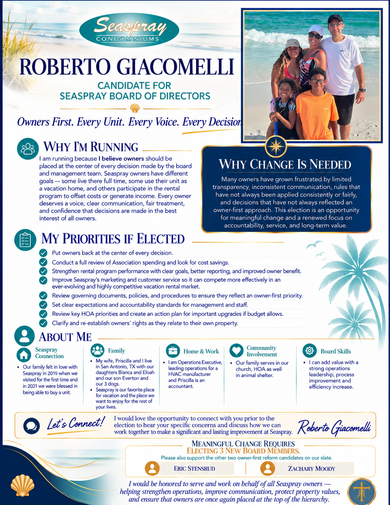

Owners First Candidate Profile
Roberto Giacomelli
Learn more about Roberto’s background, why he is running, and the priorities he wants to bring to the Seaspray Board.

Owners First Candidate Profile
Learn more about Roberto’s background, why he is running, and the priorities he wants to bring to the Seaspray Board.
